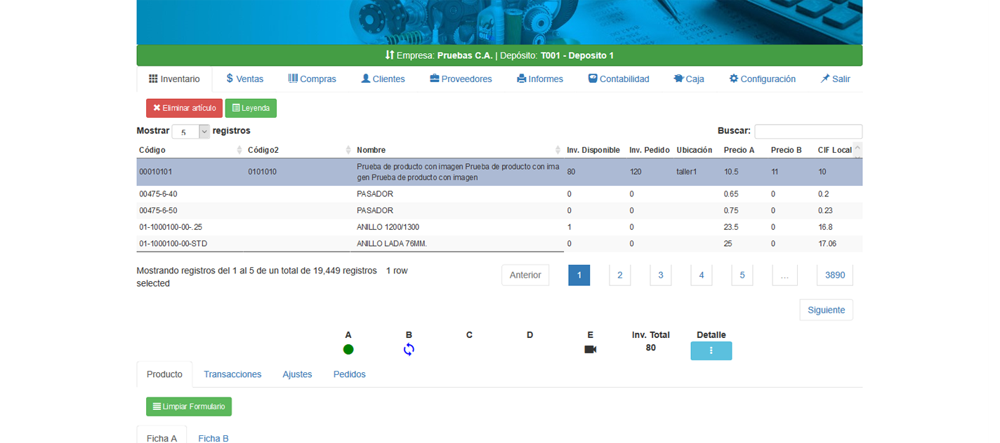

One Factoring

1 year of work experience and around 3 years working with the language taking into account the different jobs done in the university.
1 year of work experience, I have carried out the work with the Laravel 5.4 Framework (Creation of the One Factoring web system)
Handling other languages and tools with less experience such as: C ++, C #, .net, WordPress, PrestaShop
Assist Control is a platform that keeps a record of the absences and overtime of it’s workers according to the established schedule, generating different formats through the system. These schedules were then charged again through a bar code to carry out the extra remunerations that corresponded to each employee. I worked on this project for 1 year.
Tools and programming languages used: JAVA, JSF, JPA, JPQL, PrimeFaces, BD Informix, JavaScript, iReport.
Open Medical is a system that keeps track of medical appointments for people who come to the health center. My work there consisted in the creation of 42 appointment reports forms for Doctors in different areas (emergencies, epicrisis, maternal control, etc), that were made to receive and validate the data and save it in the BD. The physical formats were printed in .PDF format.This work was done through the Workana platform for a duration of 2 months.
Tools and programming languages used: JAVA, JSF, JPA, PrimeFaces, BD ProstgresSQL, JavaScript, iReport.
One factoring is an Inventory and Sales Control system with point of sale (POS), in which the purchase and sales control of the different items that are registered is kept and you can visualize all the transactions made for a product in particular, and place orders, among others. This is currently in development.
Tools and programming languages used: PHP (Framework Laravel 5.4), JavaScript, BD MySql.